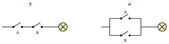

Comparar y unir condiciones
🤔 Pienso5 min
Qué hago aquí: Piensa un momento y contesta con lo que ya sabes. No pasa nada si no lo sabes: es para empezar.
Escribe V (verdadero) o F (falso): 8 > 5 3 < 3 4 = 4
📖 Leo y aprendo15 min
Qué hago aquí: Lee despacio, mira los dibujos y los ejemplos, y quédate con la idea clave del final.
Para decidir, el programa se hace preguntas. La respuesta es verdadero o falso. Estas preguntas son condiciones. En Scratch tienen forma de hexágono.
Comparar: a > b mayor que a < b menor que a = b igual a
Unir condiciones:

| A | B | A y B | A o B | no A |
|---|---|---|---|---|
verdadero falso
✏️ Hago25 min
Qué hago aquí: Haz las actividades en orden. Empieza siempre por las básicas.
puntos vale 7. ¿Verdadero o falso?
puntos > 5puntos = 10puntos < 7
Completa la tabla.
| A | B | A y B | A o B |
|---|---|---|---|
| verdadero | verdadero | ||
| verdadero | falso | ||
| falso | falso |
Un juego termina si las vidas llegan a 0 o se acaba el tiempo. Si quedan 2 vidas y el tiempo es 0, ¿termina?
Escribe la condición con bloques: «la nota es mayor que 4 y menor que 11».
✏️ Puedes responder escribiendo, con un dibujo o un esquema, o contándolo en voz alta.
🚀 Amplío (si quieres saber más)
Qué hago aquí: ¿Has terminado? Lee la curiosidad o elige el reto. Es voluntario.
Un año es bisiesto si es múltiplo de 4 y no es múltiplo de 100, o si es múltiplo de 400. Escribe la condición con mod, y, o y no. Compruébala con 2024, 1900 y 2000.
✅ Compruebo5 min
Qué hago aquí: Contesta sin mirar la ficha y marca cómo lo llevas.